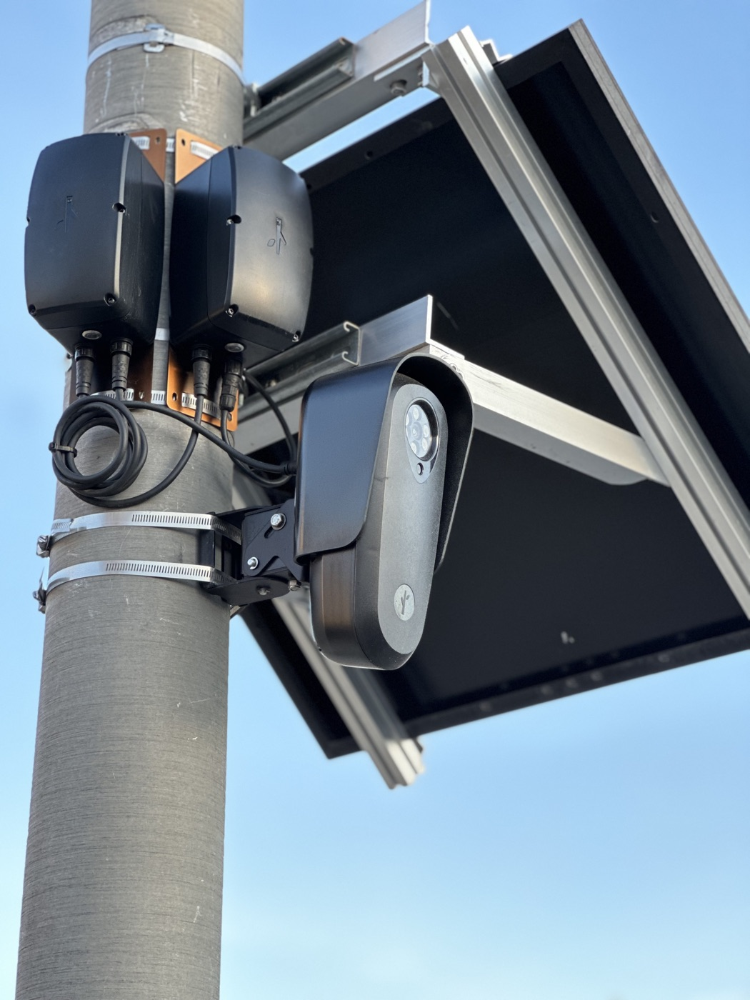

Executive Summary
At DEFCON 34 in Las Vegas on August 9, security researcher Bill Swearingen brought a 2009 Toyota Yaris on stage wrapped in a pattern of his own making. A Flock camera that reads license plates failed to pick the car out. The pattern comes from a year of work and roughly 31 million runs. This article does not ask whether it works. It asks where the number quoted alongside it came from.
The best result the project publishes is a 61.7% miss rate against a single detector. It went undetected 148 times out of 240 runs, with a confidence interval and a control adjustment attached. Next to that number the project has written its own conditions. A digitally composited print, a simulated camera, and a white-box attack run with the model weights already in hand. The dashboard states that this is not a measurement of real fabric in front of a real camera.
The side that recorded the conditions was this diligent, and the conditions still fall away as the number passes through coverage and sharing. This does not happen only on the attacking side. The 92% accuracy on the detection model we built deserves the same question about which world it was measured in.
Key Numbers
The first two numbers are the scale and the score the project puts forward, and the last two are what belongs beside that score. The third is a value the same project wrote for the same detector in a different place, and the fourth is a figure that does not exist yet.
Sources: TechCrunch report, noRecognition research dashboard
31 million
Runs accumulated in one year
All digital simulation. The project has posted 5 billion as its next target
61.7%
Highest miss rate
148 of 240 runs, against f-YOLOv5, a detector pulled from a deployed camera
100%
Same detector, the front page figure
From the project intro page. The conditions differ from the 61.7% on the research page
0
Statistics measured on a real camera
Real fabric and real camera validation is stated to be a later phase
The Pattern 31 Million Runs Built
noRecognition is a project led by Bill Swearingen, a security professional in Kansas City. He co-founded the hacker meetup SecKC and has served as an information security chief at a large telecom and as a red team lead at an NSA contractor. What the project works on is a computer-generated pattern that interferes with the step where surveillance cameras, license plate readers, and facial recognition systems recognize a person or an object. It does not stop the recording itself.

Using clothing to interfere with surveillance is not a new idea. The project cites earlier work directly, including Adam Harvey's CV Dazzle and Adversarial Fashion. What differs is scale and automation. A fuzzer that generates and scores patterns runs continuously on the dashboard, and roughly 31 million runs have accumulated over the past year. The project has set 5 billion as its next target.
Early on, patterns were changed by hand between tests. The current setup mixes reinforcement learning with a genetic algorithm. Patterns that succeed in fooling a detector survive, cross over, mutate, and produce the next generation. Rather than scattering random noise, it combines a library of more than 61 attack techniques. Dazzle camouflage aimed at geometric illusion, glitch art and pixel sorting, noise that disturbs the frequency domain, and attacks that ride the model's gradients directly are all in there. Separate techniques target specific points on a face.
The gauntlet started with ten detectors. Four that find people, four that find faces, and two that identify faces. An eleventh arrived on June 25. It is a person detector running the on-device weights pulled straight from a surveillance camera that was installed and operating, and the project calls it f-YOLOv5. The sentence TechCrunch carried, that the pattern defeated all 11 detection algorithms, points to these eleven test subjects.
That the targets are not confined to academic benchmarks is another point the project leads with. Alongside the eleven open-source detection algorithms, TechCrunch names Flock for license plate reading, Axon for police body cameras, and the facial recognition database Clearview AI. The claim is that the target is equipment running on streets and in patrol cars now rather than models in papers. How many times each of those commercial systems was tested, and with what result, is not separately visible in the published dashboard figures.
The evaluation design is fairly strict. To separate whether the pattern did the work or the body was simply covered, results are reported after subtracting the score of a control that blacks out the same area. Validation uses people held out of training, and the value recorded is the one from the worst camera angle. This deserves a fair mention. The problem is not sloppy methodology but where the line that methodology draws actually falls.
The World Where 61.7% Holds
61.7% is the value the research dashboard records as the best result against f-YOLOv5. On full-body garment coverage, 240 runs produced 148 misses, and the 95% confidence interval runs from 55.4% to 67.6%. The detection threshold was set at 0.25, and the measurement used a person held out of training. Read this far, it is a carefully assembled statistic.
The conditions sit on the same line. The print was not put on real fabric but composited digitally, and the camera was simulated rather than physical. The attack was white-box. It went in holding the detector's actual weights rather than imitating them with a surrogate model, and the project presents this as a strength, since there is no surrogate gap. Turned around, it is also a value that assumes an attacker who knows the target camera's model and weights exactly. The dashboard attaches a separate sentence to this entry, noting that the result is not from physical fabric or a real camera.
Taken apart one at a time, 61.7% is what appears when four things hold at once. A digitally composited print, a simulated camera, a white-box attack with the weights in hand, and scoring that subtracts a control and confirms on a person held out of training. On that last item, the net effect after removing the control is recorded as 0.537. On the other side, three conditions remain unmeasured, and real fabric and a real camera are among them.
There are higher numbers. A subset restricted to large garments yields 97.9%. The dashboard, though, has attached the label population pre-selection to that value on its own. It means the result came from samples already chosen for working well and cannot serve as a representative figure, and the fact that TechCrunch and other coverage do not quote it looks like a decision to respect the label. The project has graded its own numbers.
Even inside a project that grades its numbers, the figures change with where they sit. The intro page says a full-coverage garment drives f-YOLOv5 to a 100% miss rate at the threshold, and adds that the figure is 90% at the worst angle. The 61.7% on the research page is a conservative value that pools angles and garments and applies the adjustment. Neither number is a lie, but which one gets quoted changes the impression a reader takes away entirely.
The spread across detectors is wide as well. All eleven were not broken evenly at around 61%. One detector went as high as 0.90, and a ResNet34-based detector stood marked as a documented wall for some time before it was first passed on July 24 at 62.5%. A single sentence about defeating all 11 does not carry that spread.
Verification is a problem too. The public GitHub repository goes only as far as a three-model ensemble of two InsightFace models and YOLOv8n. The repository states directly that the core fuzzer code, the model integration, and the data generation routines are not published. A third party who wants to check the results of the eleven-detector gauntlet can see only the dashboard figures the project reports about itself.
The Yaris Is a Different Kind of Evidence
The DEFCON 34 talk was titled with a question about whether a pattern on clothing could fool facial recognition. Swearingen wrapped a 2009 Toyota Yaris in his pattern and put it in front of a real Flock license plate reader, and the camera did not pick the car out. In his own words, he proved it was effective. In the same session he said the wheels remain a challenge.

This demonstration happened in the physical world, and it counts for something on its own. It is a different kind of evidence from the 61.7% on the dashboard. One shows a single car and a single camera model working or not working. The other is a statistic from 240 runs with a confidence interval attached. Splice the two together into a claim that 61.7% holds in the physical world, and you have built a sentence neither source has made.
Lay out the environment, the sample, the attack conditions, and what each can actually claim, and the point where the two kinds of evidence part becomes clear. Across the four rows, there is no cell the two share.
| Category | Research dashboard | DEFCON 34 demonstration |
|---|---|---|
| Environment | Digitally composited print, simulated camera | Physical vehicle wrap, real Flock camera |
| Sample | 240 runs, confidence interval reported | One vehicle and one camera model, a single demonstration |
| Attack conditions | White-box, weights known to the attacker | Not disclosed |
| What it can claim | How well the pattern works inside a simulation | That it worked once in the physical world |
The mixing usually happens in headlines and share text. The project site writes the conditions in, coverage mentions them briefly inside the body, and by the time it reaches social media all that survives is a phrase about a pattern that beats surveillance cameras. The conditional clauses drop off one stage at a time while the number survives intact. The surviving number looks stronger for everything that disappeared around it.
The sales plan sits on this gap as well. The project intends to sell shirts, hoodies, and vehicle skins printed with the pattern through crowdfunding. It has said the strongest patterns will not be published, to keep camera manufacturers from training against them and neutralizing them. That makes the performance of whatever pattern a buyer actually receives a separate number from both the dashboard record and the Yaris demonstration.
Which World Is 92% Accuracy From?
How well a detection model holds up comes down to how far the training data distribution reaches. It is a question of whether angles, lighting, backgrounds, fabric texture and wrinkles, the distortion a real lens introduces, and video compression are inside that distribution. The 61.7% noRecognition measured is a value from the digital simulation stretch of it. What the same pattern does in the physical stretch is something the project does not know yet, which is why it wrote that down as a later phase.
Turn the direction once and this stops being a story about attackers. When the detection models, classification models, and quality scoring models we build report 92% accuracy, the same question applies. Which test set produced that 92%, and which part of the live operating environment does that test set cover? Was it measured on data held out of training, or on data cut from similar conditions? Has anyone checked whether the 92% holds only inside a distribution the model has already seen?
Benchmark numbers circulating apart from their conditions is something this blog has covered several times. There were cases where the answer key was already in the training data and the score inflated, and there was a benchmark that could be scored perfectly without solving the problem. There are also cases like a drug prediction model that calls binding correctly 98% of the time yet cannot point to the binding site, where what was measured blurred and only the score remained. This pattern story is the attacker's edition of that list.
Before a performance number goes out the door, the checks narrow to about three. They are the same items the noRecognition dashboard has already written down.
- • Does the measurement condition travel with the number? The origin and size of the test set, how it was separated, and the decision threshold need to sit on the same screen as the figure. Tucked into an appendix, they fall off the moment the number is quoted.
- • Are the most favorable value and the representative value written separately? Putting a score from a subset that works well up as the representative figure guarantees a mismatch in the field later. The way the dashboard labeled 97.9% as pre-selected is a useful model.
- • Are the conditions not yet measured named and left on the record? Writing down what has not been validated turns it into the next work list. Without it, the stretch nobody checked and the stretch that failed look the same from outside.
An accuracy or a miss rate without its conditions is not a number but a sentence someone stopped writing halfway. noRecognition wrote the other half into its own dashboard faithfully, and that half disappeared on the way out. The numbers we send out travel the same road.
Editor's Note
When Pebblous talks about AI-Ready Data, the record of evaluation conditions sits next to the quality of the data. Which distribution a measurement came from and how it was taken has to stay with the data, so that a judgment made later on the strength of that number can be traced back.